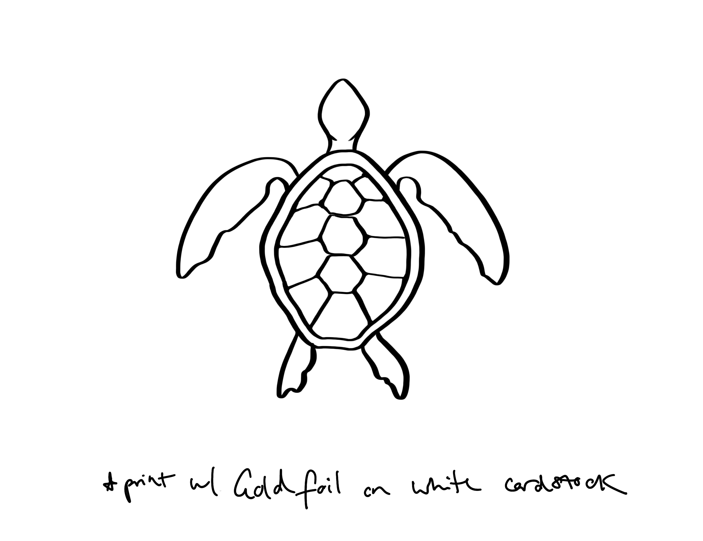
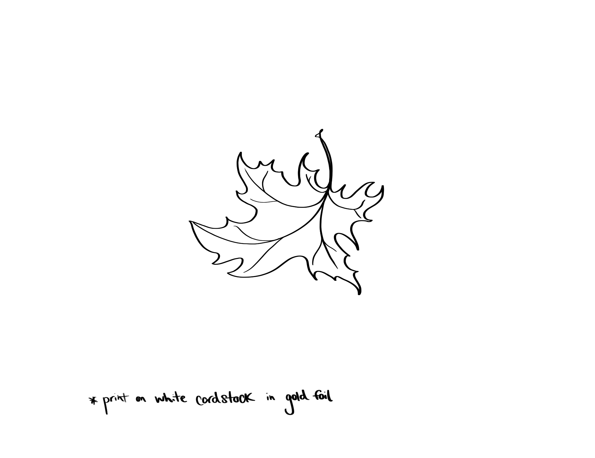

Jeanette Stock
I'm a management consultant based in San Francisco. It wasn't until I went to business school that my parents (kind of) understood what I do.
When their friends asked, they used to tell them I did "internet stuff". Which is pretty close! In a previous life, I managed enterprise accounts for a SaaS startup, and grew the reach of my program at a Canadian charity from 200 to 1,300 students in two years.
I'm also an alumni of Venture for Canada, and the former co-founder of Canada's largest conference and community for LGBTQA+ inclusion in tech & entrepreneurship.
I also dabble in storytelling, (sometimes-ghost) writing, and podcast guest-ing.
Sometimes I like to use Procreate to doodle - check out some of my favourites.

